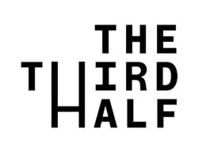

Rugby World Cup 2027 in NSW
Men’s Rugby World Cup, 1 October to 13 November 2027, Counting down
Read before you go
Match-day tips and ideas for the days around your matches.
Plan your 3rd half
Pick your teams, see their matches, and plan your NSW days around game time.
Plan around your matchesNo team, or no tickets yet?This adds every match played in NSW.
Where the matches are
Two host cities, and plenty of NSW within reach between matches.
PlayDrop Goal
Line up your kick and go for goal. Wherever the ball lands is your next idea for somewhere to go in Sydney or NSW. Keep kicking to find more.
How to play: tap to drop the ball, then tap again as it bounces.
Rugby World Cup 2027 at a glance
-
Six weeks. Two host cities.
Matches run from 1 October to 13 November 2027 in Sydney and Newcastle, with 9 pool matches and the knockouts in NSW.
See where the matches are -
Tickets come first.
Tickets are only sold through the official Rugby World Cup website. Once you know your matches, come back and plan your days around them.
Buy tickets on the official site (opens the Rugby World Cup website) -
Leave the car at home.
Trains run from Central to Olympic Park in about 30 minutes, and Moore Park is a walk from Central through Surry Hills. Sydney to Newcastle is just under three hours by train.
Read the match day guide
Rugby World Cup 2027 FAQs
Get Rugby World Cup updates
Match-day tips, things to do around the matches and offers in Sydney and NSW, sent to your inbox.
The Third Half belongs in NSW.Your team’s matches. Your days in NSW.
Men’s Rugby World Cup, 1 October to 13 November 2027, Counting down
Pick your teams, see their matches, and plan your NSW days around game time.
Suggestions appear below as you type. Enter picks the first one; down arrow moves through them. Escape closes the search.
Arrow keys move between the teams, up and down between the rows; type a letter to jump to teams starting with it. Space or Enter picks one. You can pick more than one.
No teams picked yet.
Your matches
Swipe for your other cards.
All matches
Every match of the tournament, by date. Tap one for its details.
No team? This adds all the matches played in NSW.
Swipe sideways for the next five matches.
Where to watch
Screenings for your matches, at pubs, the village and a fan zone.
Around your matches
Around your match days in NSW. Each links out; nothing is booked here.
Your plan so far
Your plan
Which team are you here for? Pick one to see only their matches.
No team? This adds all the matches played in NSW.
To watch in NSW. They aren’t added to your plan.
Your plan is currently saved to this device only. Your teams are only used to show their matches.
Save & share
Keep a copy
Enter an email like name@example.com
We will use your email only to send this plan. Privacy policy
Open in your apps
Add team
Pick the teams you follow. What you saved is planned around their matches.
Pick your teams
Pick the teams you follow. Their matches go on your plan.
Type a team’s name or code; the list below narrows as you type. Escape clears it.
Clear your plan?
Taken off
Stays
You can undo this straight after.
Who are you kicking for?
Tap a team. Your kicker wears their kit, and what a goal lands on depends on where they play. No team? Pick the one you’d like to follow.